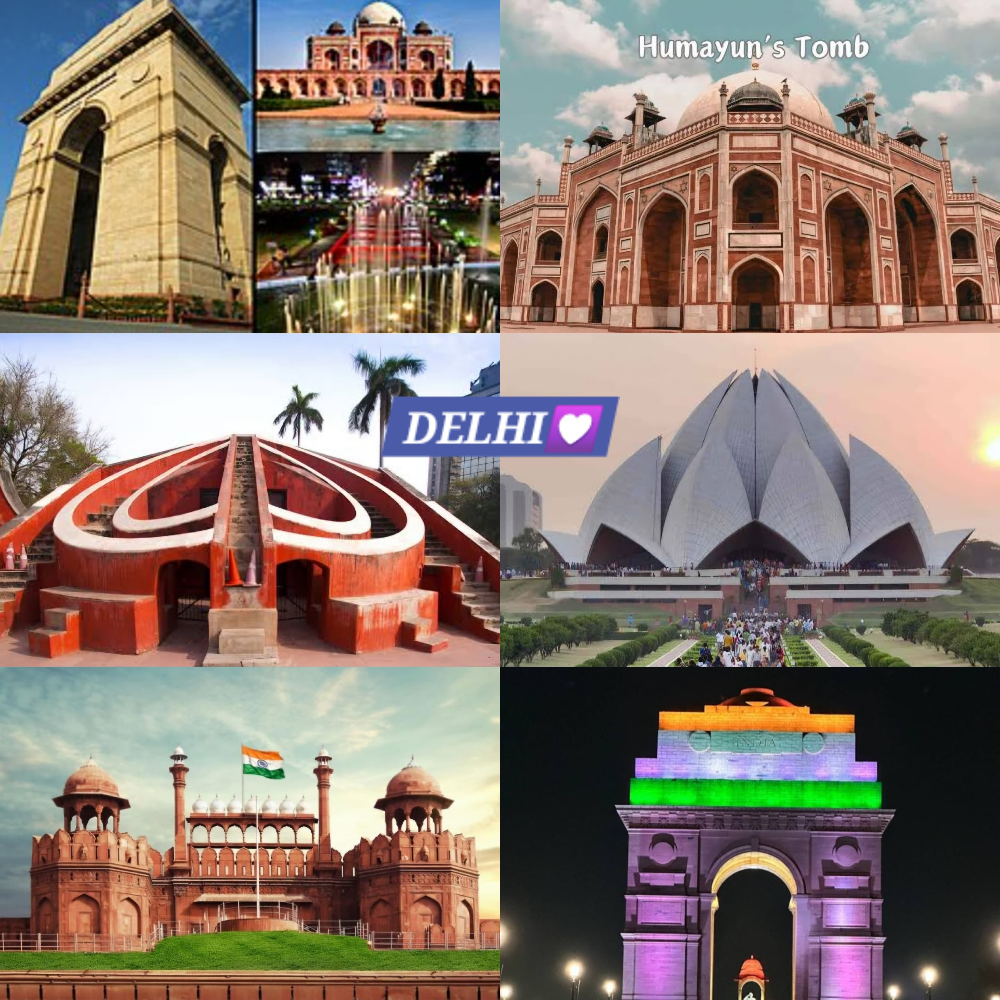

About Me

Hello! My name is Vanshika. I am currently pursuing my BTech in Artificial Intelligence in DSEU Shakarpur Campus. I am passionate about technology, coding, and creating innovative solutions. In my free time, I enjoy reading, hiking, and experimenting with new programming frameworks.
I am lived in delhi and it is very intresting and lovely thing for me as it is my hometown also.
Delhi is located in north of India. It is known for India's capital territory.Delhi is home to many monuments,including the Qutb Minar, Humayun's Tomb, Jama masjid, Red Fort, India Gate,
Lotus temple and many other monuments. The town has a rich history and beautiful landscapes, making it a wonderful place to visit.
To reach Delhi from major cities in India: Delhi's culture is a vibrant blend of traditional and modern influences, with a rich history and diverse population.
Delhi is home to people from various religious backgrounds, including Hindus, Muslims, Sikhs, Christians, and others. This diversity is reflected in the city’s festivals, rituals, and places of worship. Major festivals like Diwali (Hindu), Eid (Muslim), Gurpurab (Sikh), Christmas (Christian), and Holi (Hindu) are celebrated with great enthusiasm. The city has an impressive array of religious sites, such as the Jama Masjid, the Akshardham Temple, and the Gurudwara Bangla Sahib.
Hindi is the most widely spoken language in Delhi, but English is also commonly spoken, especially in urban and professional settings. Other languages spoken include Punjabi, Urdu, and a variety of regional languages brought by migrants from different parts of India The best time to visit Delhi is October, November, December, January, February and March. Since this is the peak season expect a little crowd during this time. July, August and September period experiences moderate weather. So, you can easily avoid facing a large gathering.
My Home Town

Overview
How to Reach
Culture
Languages Spoken

Best Time to Visit
Nearby Sightseeing Places